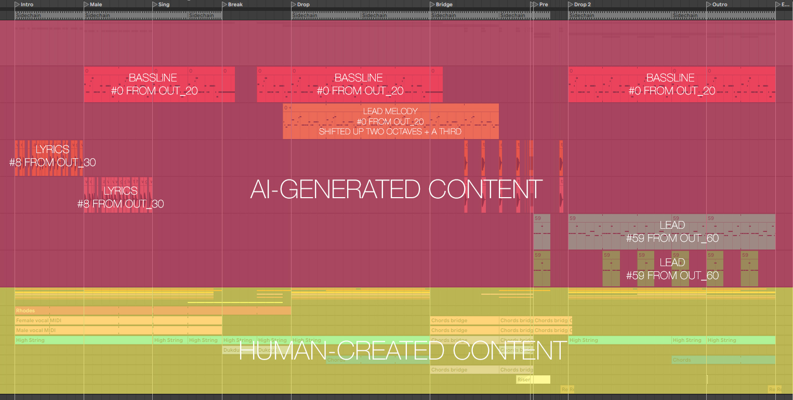
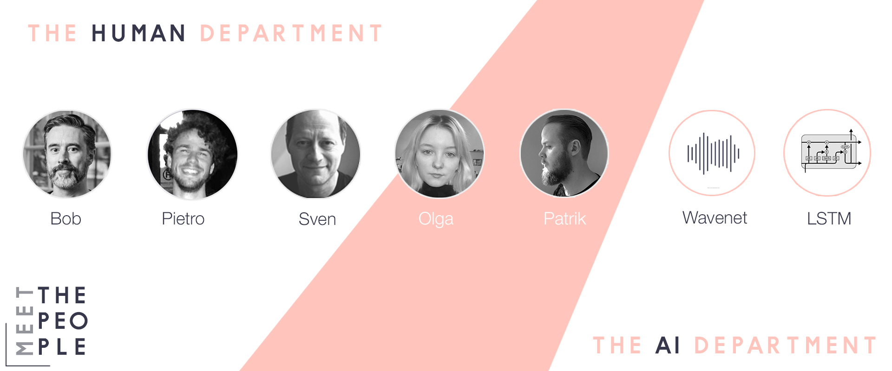

Hear the song
Listen to the result of the human-AI collaboration in official contest website
My song entry, “Come To Ge Ther”, arises from a human-AI collaboration. It was assembled from human-curated content generated by an AI trained on a dataset composed of syllable-note pairs. Thus, the AI jointly generates lyrics and melody. The lyrics are represented in a syllabic way, and so to generate a multiple-syllabic word requires several steps of the process. The picture below shows where material comes from in the mix of the song. Furthermore, the lyrics heard in the introduction are synthesized from computer models of female and male voice (i.e., Google wavenet).
The team was assembled once the organizers met with us at ISMIR2019 in Delft, the Netherlands. At that time, Pietro and Bob had already been working on AI and music. Bob specializes in folk music, and AI-generated folk music. This provided an opportunity to expand into more popular areas.
Bob L. T. Sturm received the B.A. degree in physics from University of Colorado, Boulder in 1998, the M.A. degree in Music, Science, and Technology, at Stanford University, in 1999, the M.S. degree in multimedia engineering in the Media Arts and Technology program at University of California, Santa Barbara (UCSB), in 2004, and the M.S. and Ph.D. degrees in Electrical and Computer Engineering at UCSB, in 2007 and 2009. In Dec. 2014, he became a Lecturer at the Centre for Digital Music at Queen Mary University of London. In July 2018 he became an associate professor of computer science at the Royal Institute of Technology KTH in Stockholm Sweden. In December 2019 he was awarded an ERC Consolidator Grant for the project "MUSAiC: Music at the Frontiers of Artificial Creativity and Criticism" (No. 864189).
Pietro Bolcato received a bachelor’s degree in Computer Science from the University of Trento, Italy in 2018. Before graduation, he spent six months in Bucharest working in a research team on the topic of emotion recognition and music suggestion through machine learning. Afterward, he received a scholarship and started a double master's degree in Autonomous Systems and Innovation and Entrepreneurship. He was awarded an additional scholarship for the grades obtained in the first year of studies and currently he is finishing the second year at KTH in Stockholm. He is interested in the field of music informatics and computational creativity as a means to bring together art and science.
The initial stages involved exploring existing approaches to generate melody and lyrics separately, then melody given lyrics or lyrics given melody, and finally generating the two concurrently. It was in the concurrent generation I decided to focus since that was unique. The techniques I explored involve recurrent approaches, such as LSTM, with conditioning. I also experimented with GANs, but that didn’t really work out well. I decided to use the dataset “lmd-full + reddit” in the paper Yu and Caneles, “Conditional LSTM-GAN for Melody Generation from Lyrics”, arXiv 1908.05551v1 2019.
As a preprocessing step, I first unified all the syllables under the same domain by applying strip and lower case, removing numbers and punctuation and finally by keeping only the tokens appearing more often. Second, I normalized the pitches and the durations by considering only the notes between C1 and B7 as well as the durations between 0.25 and 4.0. This leads to a reduction of the pitch space from 115 to 84 and the duration space from 19 to 10.
I trained a variety of models with different amounts of conditioning, and different output lengths. It is quite clear at this time that designing and training one AI that creates an entire song that stylistically fits within Eurovision is not possible. I could cobble together a variety of systems that create content, and then selects and arranges, and then synthesizes and masters the track; but the time frame of the competition is too short. Furthermore, that subject is far beyond a single master’s degree project. I decided early on that the song would be created by curating material generated by an AI and then assembling it together to form a coherent whole. I decided to keep the generated melody and lyrics together, rather than take lyrics from one generation and fit it to the melody of another generation.
After I trained the final network I had it generate a bulk of 100 sequences and then found the most interesting material by listening to them. The final song “Come To Ge Ther” was gradually shaped by Pietro, with input from Bob to edit it into a form that met the requirements of the contest. Pietro started the song by finding a sequence suitable to be used as bassline. The selected one was #0 from out_20 and can be found here. It has been slightly adapted by reducing the length of the clip to fit 4/4. The same sequence has been transposed up two octaves and shifted up a third in order to create the melody for the singer. Afterward, another sequence (#59 from out_60) has been slightly modified and selected as lead and played on top of the bassline. Finally, the spoken lyrics in the intro come from another generated sequence. Starting from these fundamental building blocks, the remaining elements such as the chord progression, the drums, and the accompanying instruments were created and as the final step, all the elements were arranged and mixed.
More in-depth information can be read in the master thesis here.
Listen to the result of the human-AI collaboration in official contest website